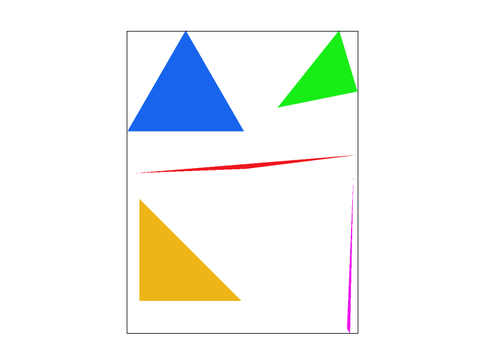
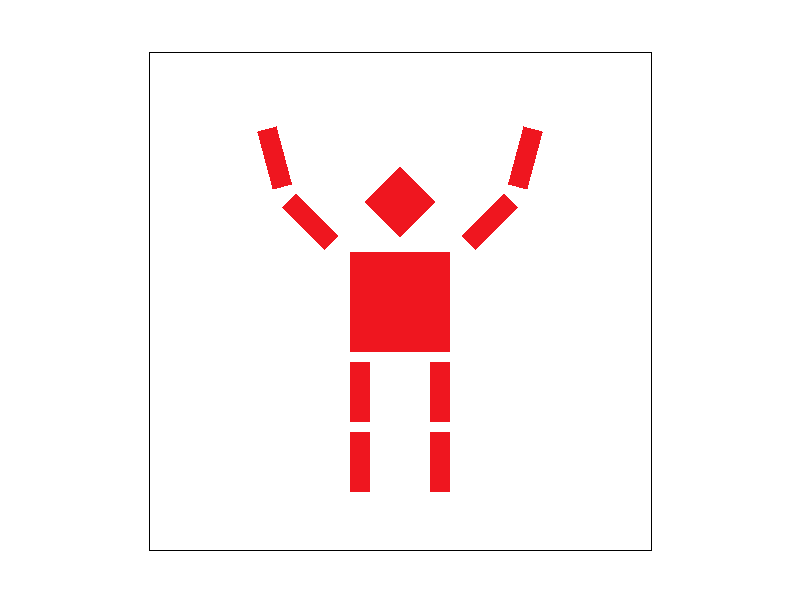
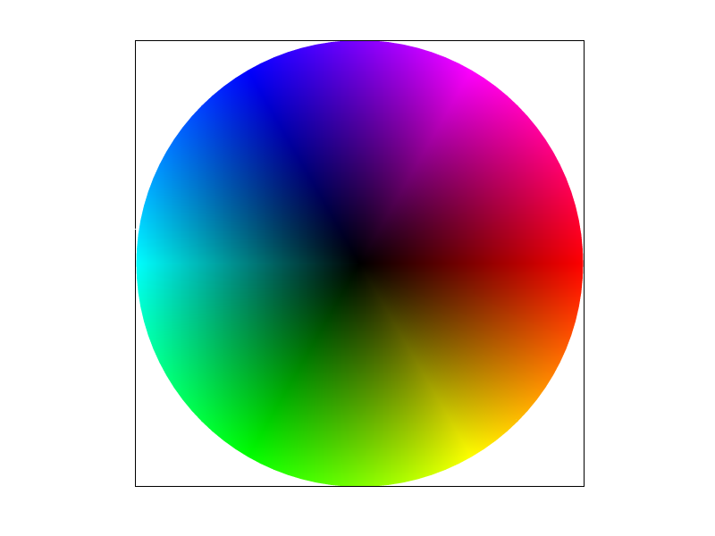
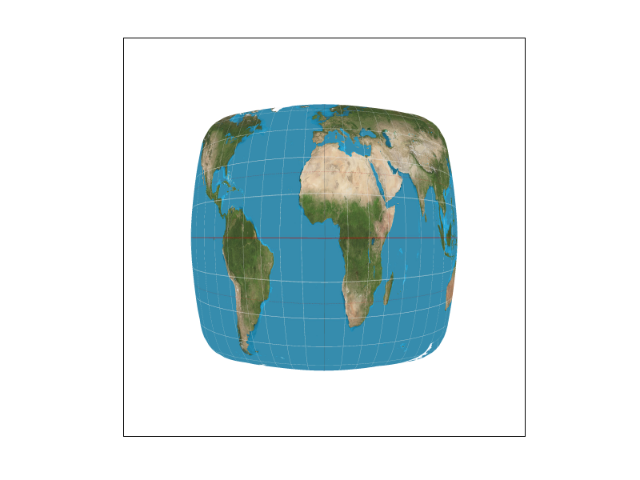
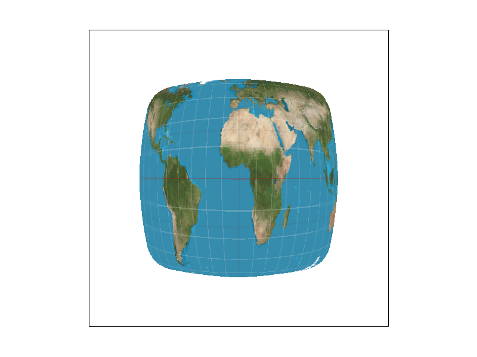

CS184/284A Spring 2025 Homework 1 Write-Up
Link to webpage: hw-webpages-Julius-Valerius/hw1
Link to GitHub repository: cal-cs184-student/hw1-rasterizer-juliusv
Overview
In this assignment, I implemented a 2D software rasterizer for the rendering of SVG files. I built the entire pipeline based on the given framework, starting with basic triangle rasterization using bounding boxes and line equations. To address the issue of aliasing, I implemented a flexible supersampling system that supports various sample rates.
This rasterizer also integrates a hierarchical transform system using 3x3 homogeneous matrices to handle translations, rotations, and scaling. The project uses advanced texture mapping techniques, where I implemented both pixel sampling (Nearest and Bilinear) and level sampling using Mipmaps (Zero, Nearest, and Linear) to balance visual quality and performance.
The most interesting thing I learned was how supersampling is implemented. Seeing a jagged edge transform into a smooth line by changing the sampling method is a great leap for me. Debugging the SVG file of the robot's transform is also a intriguing expoerience.
Task 1: Drawing Single-Color Triangles
My triangle rasterization algorithm uses a standard scan-conversion approach. First, I identify the bounding box of the triangle by finding the minimum and maximum $x$ and $y$ coordinates among the three vertices. To ensure the bounding box stays within the drawing area, I perform boundary clipping against the image dimensions.
I then iterate through every pixel within this bounding box using a nested for loop. For each pixel, I sample its center at $(x + 0.5, y + 0.5)$ and perform three Line Tests using the cross-product-based edge functions. If the sample point returns consistent signs (all $\ge 0$ or all $\le 0$) for all three edges, it confirms the point is inside the triangle, and I call fill_pixel to color it.
Efficiency Analysis: My algorithm is no worse than one that checks each sample within the bounding box because the iteration range of my loops is explicitly defined by the triangle's min_x, max_x, min_y, and max_y. It avoids performing any computations for pixels outside this minimal rectangular region, ensuring optimal performance for a basic scan-conversion rasterizer.

|
Task 2: Antialiasing by Supersampling
Supersampling is a powerful spatial antialiasing technique that improves image quality by sampling at a higher frequency than the final pixel grid and then averaging the results. This effectively captures high-frequency details (like sharp triangle edges) that would otherwise cause "jaggies" or aliasing artifacts.
Algorithm and Data Structures:
To implement supersampling, I modified the sample_buffer to store multiple sub-pixel samples for each screen pixel. Specifically, the buffer size was increased to width * height * sample_rate.
In rasterize_triangle, I added two additional nested loops to iterate through a $\sqrt{\text{sample_rate}} \times \sqrt{\text{sample_rate}}$ grid within each pixel.
Each sub-pixel's center is calculated as:
\[ (x + \frac{i + 0.5}{\sqrt{\text{sample_rate}}}, y + \frac{j + 0.5}{\sqrt{\text{sample_rate}}}) \]
If a sub-pixel lies within the triangle, its color is stored in the sample_buffer at index:
(y * width + x) * sample_rate + (j * sqrt_rate + i).
Pipeline Modifications:
- Buffer Management: Both
set_sample_rateandset_framebuffer_targetwere updated to dynamically resize thesample_bufferbased on the current sample rate. - Resolving: The
resolve_to_framebufferfunction was redesigned to perform a downsampling step. It iterates through each pixel, averages the colors of its associated sub-pixels in thesample_buffer, and writes the resulting average to the finalrgb_framebuffer_target. - Point/Line Compatibility: I also updated
fill_pixelto fill all sub-pixels of a target pixel with the same color, ensuring that points and lines remain visible and consistent regardless of the sample rate.
Visual Results and Observations:
As shown in the screenshots below, increasing the sample rate significantly smooths the sharp corners and edges of the triangles. At 1x sampling, the skinny triangle corner appears "broken" and jagged because the single sample point at the pixel center either hits or misses the thin geometry. As the sample rate increases to 4x, 9x, and 16x, pixels partially covered by the triangle receive an averaged color (e.g., a lighter red), creating the visual illusion of a smoother, continuous edge.
Here are my four comparison images. As the sampling rate increases, the ‘stair‑step’ aliasing along the triangle edges is significantly reduced, and the transitions become much smoother.




Task 3: Transforms
In this task, I implemented the three fundamental 2D affine transformation matrices in transforms.cpp: translate, scale, and rotate. Using homogeneous coordinates, I built a system that allows for complex hierarchical modeling.
Design Choice: "The Cheering Cubeman"
My goal was to transform the static, default robot into a more expressive character. I created the "Cheering Cubeman" by modifying robot.svg. As shown in the comparison below, I moved the robot's arms from a neutral horizontal position to an excited "\o/" pose.

robot.svg: The default neutral pose.
my_robot.svg: The "Cheering Cubeman" with rotated arm segments.To implement this, I nested the forearm transformations within the shoulder transformations. This ensured that when I rotated the shoulders ($-45^\circ$ left, $45^\circ$ right), the entire arm moved as a single unit. I then added a slight $30^\circ$ rotation to the forearms to create a more dynamic, celebratory gesture.
Task 4: Barycentric coordinates
Barycentric coordinates are a coordinate system that defines any point $(x, y)$ within a triangle as a weighted average of its three vertices ($V_A, V_B, V_C$). A point $P$ is represented by three scalars $(\alpha, \beta, \gamma)$ such that: \[ P = \alpha V_A + \beta V_B + \gamma V_C \] where $\alpha + \beta + \gamma = 1$ and all coefficients are non-negative for points inside the triangle.
Interpretation through Color Interpolation: The most intuitive way to visualize this is through color blending. If each vertex is assigned a primary color (Red, Green, and Blue), the color at any interior point is calculated by interpolating these values using the barycentric weights. For example, a point closer to vertex $A$ will have a higher $\alpha$ value and thus appear more "Red."

basic/test7.svg: A color wheel composed of many triangles, each seamlessly blended using barycentric color interpolation.
In my implementation, I utilized this property within rasterize_interpolated_color_triangle to produce smooth gradients. By calculating the $(\alpha, \beta, \gamma)$ values for every sub-pixel, I could assign a unique, blended color that creates the continuous spectrum seen in the color wheel above.
Task 5: "Pixel sampling" for texture mapping
Pixel sampling is the process of determining the color of a pixel on the screen by mapping its coordinates back to a texture's $(u, v)$ coordinate space. In my implementation, I used barycentric coordinates to interpolate the $(u, v)$ values at each sample point based on the coordinates provided at the triangle's vertices. Once the $(u, v)$ is determined, a sampling method is used to retrieve the final color from the texture map.
Nearest vs. Bilinear Sampling:
- Nearest Neighbor: This method identifies the single closest texel to the calculated $(u, v)$ coordinate and uses its color. While fast, it often leads to "blocky" artifacts when the texture is magnified.
- Bilinear Interpolation: This method samples the four nearest texels and performs a 2D weighted average based on the fractional distances $(s, t)$ from the sample point. This results in significantly smoother color transitions and reduces pixelation.

Observations and Analysis:
Comparing the four images above (using svg/texmap/test1.svg), the difference is most pronounced in areas with high-frequency details or sharp color contrasts.
Nearest sampling at 1x exhibits significant aliasing and "stepped" artifacts.
Bilinear sampling effectively smooths these transitions even at 1x, making it superior for textures that are stretched or viewed closely.
While 16x supersampling improves the quality of nearest sampling by averaging multiple points, the combination of Bilinear + 16x provides the highest visual fidelity, nearly eliminating all visible jaggies and pixelation.
The difference between the two methods is largest when the sampling rate is low (1x) and the texture is being magnified, as bilinear interpolation can "invent" intermediate colors that nearest sampling simply cannot.
Task 6: "Level Sampling" with mipmaps for texture mapping
Level sampling is a technique used to prevent aliasing (especially Moire patterns) when textures are viewed at a distance or at sharp angles. Instead of sampling from a single high-resolution image, we pre-compute a "pyramid" of downsampled textures called Mipmaps. Based on how much the texture coordinates ($u, v$) change between adjacent screen pixels, we select an appropriate Mipmap level that matches the pixel's footprint.
Implementation:
To implement this, I first calculated the screen-space gradients $(du/dx, dv/dx)$ and $(du/dy, dv/dy)$ by sampling the UV coordinates at $(x+1, y)$ and $(x, y+1)$.
In get_level, I scaled these gradients by the texture dimensions and used the formula $L = \log_2(\max(\sqrt{(du/dx)^2 + (dv/dx)^2}, \sqrt{(du/dy)^2 + (dv/dy)^2}))$ to determine the level $L$.
I implemented three modes: L_ZERO (always level 0), L_NEAREST (round to nearest level), and L_LINEAR (trilinear interpolation between two levels).
Trade-offs between Techniques:
| Technique | Speed | Memory Usage | Antialiasing Power |
|---|---|---|---|
| Supersampling | Very Slow (scaled by sample rate) | Very High (large sample_buffer) | Best for edge antialiasing |
| Pixel Sampling (Bilinear) | Fast (small constant overhead) | Zero extra memory | Good for magnification blur |
| Level Sampling (Mipmap) | Fast (improves cache locality) | Moderate (~33% overhead for pyramid) | Best for minification/Moire |
